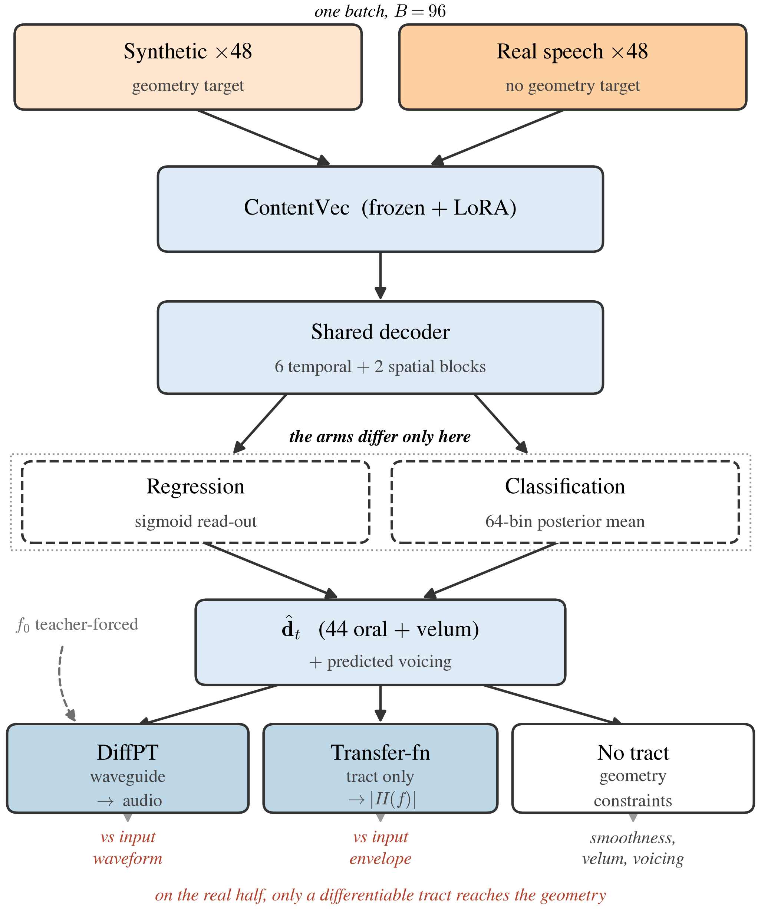
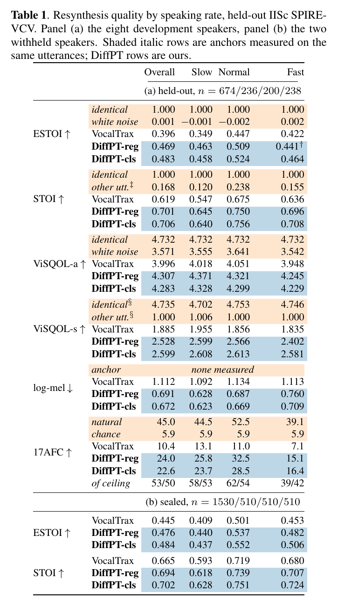
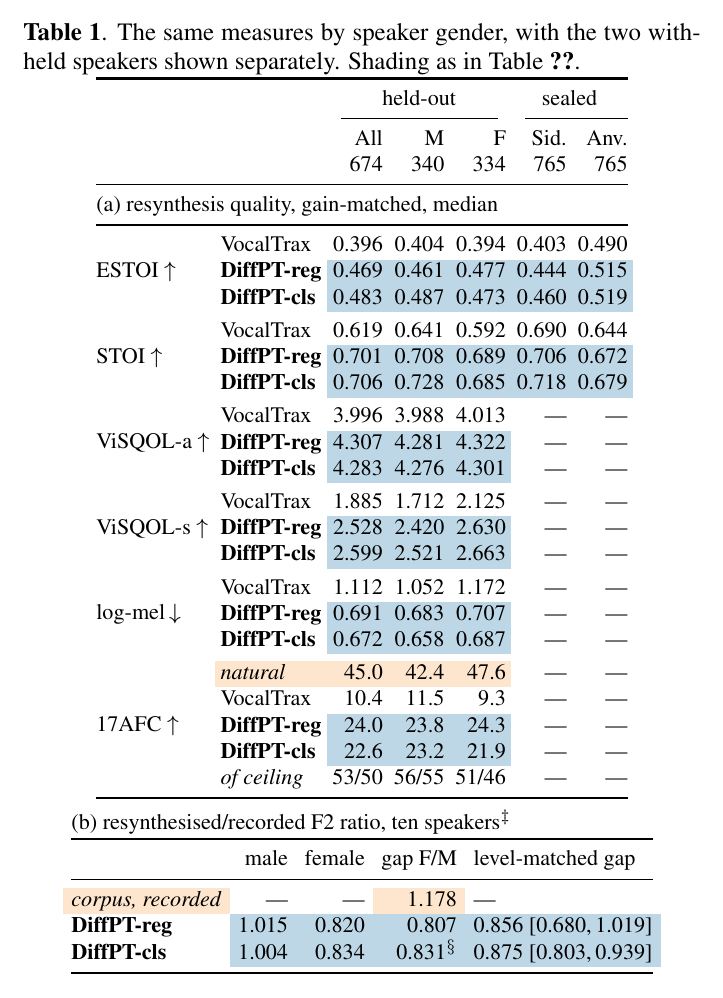
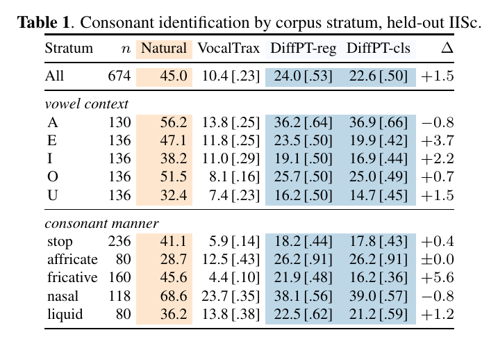
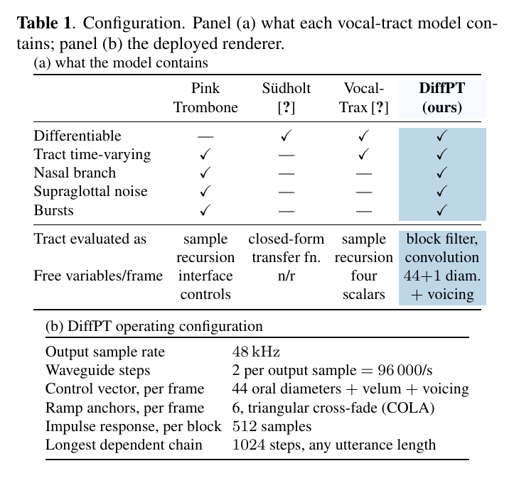

A differentiable Pink Trombone — the complete waveguide, nasal branch, turbulence and bursts included, made trainable.
The paper states this in a sentence. Here is each one, and only two of them cost anything.
| 1 | The scattering recursion costs |
Why it blocks a gradient. The waveguide advances two steps per output sample,
so one second of audio at 48 kHz is a chain of 96,000 dependent updates. Every quantity we
need a gradient for lies inside that chain. What we do. Pink Trombone is already controlled at a block rate: it recomputes the junction reflections once per control block and ramps linearly between blocks. Hold the reflections at a fixed point on that ramp and the tract becomes linear and time-invariant, so the block is a fixed filter. Its 512-sample impulse response is computed once and applied by convolution. Six anchors per frame are evaluated independently and cross-faded at the sample rate; the triangular cross-fade satisfies the constant-overlap-add condition, so the effective response stays continuous across sub-frame and frame boundaries. What it buys. The longest chain of dependent operations becomes 1024 waveguide steps behind a single 512-sample impulse response, whatever the utterance length, and blocks evaluate in parallel. |
| 2 | Turbulence and burst gating costs |
Why it blocks a gradient. Two separate reasons, often conflated. First, the
injection site: Pink Trombone places turbulence using the constriction list its interface
supplies, and that list is handed in per frame — it is not a function of the tract
shape, so there is no derivative to take. An inverter emitting only diameters has no such
list. Second, bursts: the reference fires a transient only at exact closure
(diameter <= 0), and a bounded output cannot reach zero — in our bin grid
the lowest reachable diameter is 0.010, and 12 of the 44 sections floor above 0.05.What we do. Apply the same diameter-dependent gate to every section and let the weighting find the constrictions. The gate is band-pass in diameter — zero at d ≥ 0.4 and zero at full closure, peaking near d ≈ 0.2 —
so weighting every section self-gates down to the actual constrictions with no rounding and
no argmin. Bursts release at a diameter of 0.05. |
| 3 | The glottal source exact |
Why it looks like a problem. The Liljencrants–Fant model is piecewise: an open
phase and a return phase, split at t = Te.Why it is not one. The split is on time within a pitch period. The tract diameters never enter that function, so with respect to the quantities we differentiate it is not piecewise at all. Both branches are evaluated and blended by a mask. |
| 4 | Velum coupling exact |
Why it looks like a problem. The nasal branch joins the oral tract at a three-way
junction, which sounds like it needs a discrete decision. Why it is not one. The junction reflections are an algebraic function of the three cross-sectional areas, differentiable everywhere the areas are positive, and the velum is simply one coordinate of the diameter vector. |

Both arms share the batch, the encoder, the decoder trunk and nine of the eleven loss weights. They diverge only at the read-out. On the real half of every batch nothing supervises the geometry except the acoustics.
Every row: the original recording, then resynthesis from each arm's recovered geometry, then the per-utterance optimisation baseline — all four through the same 44-section tube.
The rate at which the block-rate approximation costs most, and the rate at which the recogniser itself reads worst.
| Natural | DiffPT-reg | DiffPT-cls | VocalTrax | |
|---|---|---|---|---|
| UGUAbhinav · fast | ||||
| EGEAishwarya · fast | ||||
| ETEAishwarya · fast | ||||
| UDUAishwarya · fast |
The velum couples the nasal branch; the corpus labels these frames and a pairwise margin uses that ordering.
| Natural | DiffPT-reg | DiffPT-cls | VocalTrax | |
|---|---|---|---|---|
| AMAAbhinav · normal | ||||
| ANgAAbhinav · fast | ||||
| OMOAbhinav · normal | ||||
| UNUAbhinav · fast |
A complete closure and a release. The per-utterance baseline scores 5.9% here, which is chance.
| Natural | DiffPT-reg | DiffPT-cls | VocalTrax | |
|---|---|---|---|---|
| ABAAbhinav · normal | ||||
| ADAAbhinav · normal | ||||
| AGAAbhinav · slow | ||||
| AKAAbhinav · slow |
The tract length is fixed at 16.18 cm for every speaker.
| Natural | DiffPT-reg | DiffPT-cls | VocalTrax | |
|---|---|---|---|---|
| AFAAishwarya · fast | ||||
| AMAAishwarya · fast | ||||
| ASAAishwarya · slow |
Shown for contrast with the row above.
| Natural | DiffPT-reg | DiffPT-cls | VocalTrax | |
|---|---|---|---|---|
| AChAAbhinav · slow | ||||
| AFAAbhinav · normal | ||||
| AJhAAbhinav · slow |
The paper reports four measures. These are all six, including STOI and ViSQOL's audio mode, which the paper does not use.




import torch
from diff_pt_v2.components.audio_system import DifferentiableAudioSystem
renderer = DifferentiableAudioSystem() # 44 oral + 28 nasal, 48 kHz internal, 16 kHz out
vtd = torch.full((1, T, 45), 0.6) # velum + 44 oral diameters, per frame
vtd[0, :, 21:25] = 0.15 # a constriction
voi = torch.full((1, T), 0.9)
f0 = torch.full((1, T), 120.0)
vtd.requires_grad_(True)
audio = renderer(vtd, voi, f0)
audio.pow(2).mean().backward() # the gradient reaches vtdDIFFPT_DISABLE_COMPILE=1. torch.compile
unrolls the 512-step impulse-response loop into a graph of 5000+ nodes; compilation took
362 s on CPU and did not finish on a GPU.